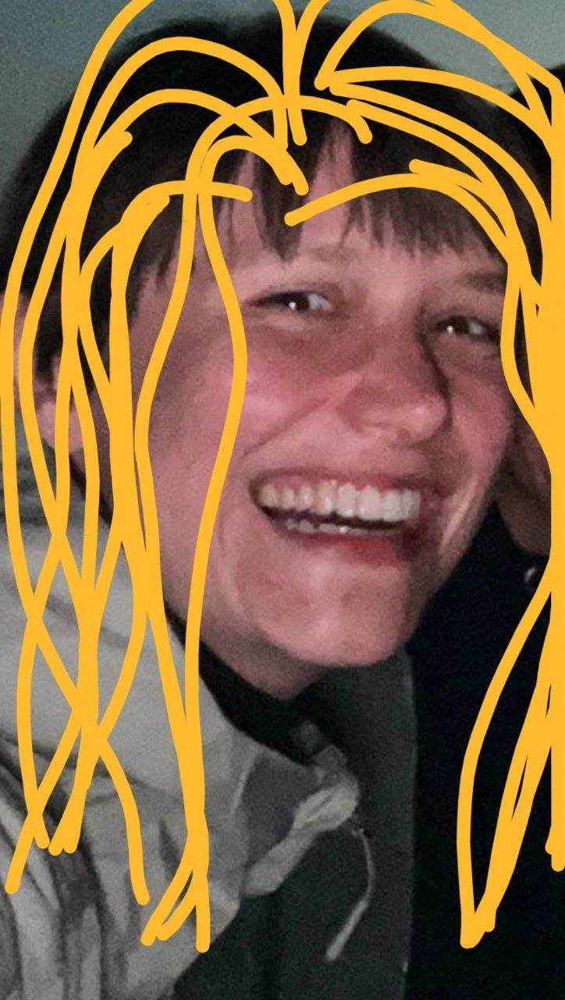

Gude Hannah! Niemand hat den Dancefloor so zum Beben gebracht wie du! Die Nächte in Offenbach werden ohne deine Energie nicht mehr dieselben sein. Mach's gut!
28. Juli 2025Eure Hannah verlässt die Stadt, aber die Nächte bleiben legendär!
(Klick auf Play, falls die Musik nicht von selbst startet!)


 Hannah's Gästebuch
Hannah's Gästebuch
Ein Raver (aus dem Robert Johnson) schrieb:
Arbeitskollege Tobias schrieb:
Hey Hannah, die Kaffeeküche ist ohne deine Geschichten vom Wochenende jetzt schon still. Hat mich echt gefreut, mit dir gearbeitet zu haben. Viel Erfolg bei allem, was kommt!
26. Juli 2025Die Kiosk-Besitzerin (vom Eck) schrieb:
Ach mein Kindchen, musst du denn wirklich so weit weg? Ich hab doch immer gern auf dich gewartet, auch wenn du erst zum Frühstück mit leeren Flaschen ankamst. Pass auf dich auf!
25. Juli 2025Der Tannenbaum-Wirt (aus Alt-Sachs) schrieb:
Hannah, auf dich war Verlass! Ob zum Vorglühen oder für den Absacker, du hast immer Stimmung in die Bude gebracht. Der erste Deckel nach deinem Abschied geht auf mich!
22. Juli 2025Eintracht-Adler (aus der Kurve) schrieb:
Auch wenn du lieber im Club als im Stadion warst, im Herzen bist du eine von uns! Forza SGE, egal wo du bist!
20. Juli 2025Ein Dachs (aus dem Taunus) schrieb:
Hallo Hannah. Du erinnerst dich vielleicht nicht, aber du hast mich letztes Jahr auf der Landstraße angefahren. War nicht schlimm, nur ein Schock. Aber selbst ich muss sagen: Die Nächte sind ruhiger ohne dein altes Auto, das mit wummernden Bässen vorbeifährt. Trotzdem, irgendwie wirst du fehlen. Pass auf dich auf.
18. Juli 2025Der Türsteher (vom Gibson) schrieb:
Mädsche, du bist eine der wenigen, die hier immer reingekommen ist, egal wie lang die Schlange war. Hast einfach Ausstrahlung. Bleib so!
15. Juli 2025Yok-Yok-Verkäufer schrieb:
Ein letztes Mispelchen auf dich, Hannah! Du warst immer gut für einen Schwank aus der Nacht. Komm heil an!
12. Juli 2025Museumsuferfest-Standbetreiber schrieb:
Jedes Jahr warst du die erste und die letzte an meinem Cocktailstand. Wer soll denn jetzt meine Vorräte leeren? Viel Glück!
10. Juli 2025Ein anderer Raver (aus dem THW) schrieb:
Ohne dich auf der Tanzfläche im Tanzhaus West fehlt einfach was. Deine Energie war ansteckend. Wer soll uns jetzt alle zum Weitermachen motivieren?
08. Juli 2025Die etepetete Westend-Nachbarin schrieb:
Liebe Hannah, wir wünschen Ihnen für Ihre Zukunft alles erdenklich Gute. Es wird sicherlich... ruhiger werden in der Hausgemeinschaft. Man wird Ihr... Temperament vermissen. Herzlichst, Ihre Nachbarn.
06. Juli 2025Buchhändlerin (aus der Berger Straße) schrieb:
Du kamst immer total verkatert rein und hast trotzdem die besten Bücher gefunden. Ein faszinierender Kontrast. Wirst eine Lücke hinterlassen.
05. Juli 2025Der Eiserne Steg schrieb:
Ich habe dich oft mit deinen Freunden hier stehen und auf die Skyline blicken sehen. Eure Träume waren so groß wie die Türme. Mögen sie alle in Erfüllung gehen.
02. Juli 2025Ein Skater (vom Hafenpark) schrieb:
Yo Hannah, auch wenn du selbst nie auf dem Board standest, du hast immer die besten Beats für unsere Sessions mitgebracht. Peace!
28. Juni 2025Die Stimme aus der U-Bahn schrieb:
Nächster Halt: Ein neues Leben. Bitte aussteigen. Ich werde deine verschlafenen Fahrten am frühen Morgen vermissen. Alles Gute.
25. Juni 2025Ein Apfelweinbauer (aus der Wetterau) schrieb:
Mädsche, du hast mehr von meinem Stöffche getrunken als jeder andere. Wer soll denn jetzt die Ernte vom letzten Jahr vernichten? Komm bald mal wieder uff en Schoppe vorbei!
22. Juni 2025Der letzte Drink (aus der Pracht) schrieb:
Ich war für dich da, an guten wie an schlechten Abenden. Jetzt musst du ohne mich klarkommen. Aber ich weiß, du schaffst das. Prost, auf dich!
20. Juni 2025Sven Väth (aus dem Off) schrieb:
Hab dich oft im Cocoon und anderswo gesehen. Immer volle Pulle dabei. Gude Energie. Frankfurt verliert eine treue Seele der Nacht. Mach's gut, Rakete.
19. Juni 2025Ein Eichhörnchen (aus dem Palmengarten) schrieb:
*quietsch* Du hast uns immer die Reste von deinem Döner dagelassen. Danke! *quietsch quietsch*
18. Juni 2025Der Nebel (aus dem Freud) schrieb:
Ich habe dich so oft umhüllt, wenn du bis in die Morgenstunden getanzt hast. Ohne dich ist es nur noch kalter Dampf. Du warst das Herz des Clubs.
15. Juni 2025Ein Flohmarkt-Verkäufer (vom Mainufer) schrieb:
Du hast bei mir die verrücktesten Klamotten für deine Partynächte gefunden. Dein Stil war einzigartig. Bleib so bunt!
12. Juni 2025Ein anderer Unbekannter (von der Zeil) schrieb:
Ich hab dich mal samstags auf der Zeil gesehen, wie du mitten im Gedränge getanzt hast, weil du Musik auf den Kopfhörern hattest. Das hat meinen Tag besser gemacht. Danke.
10. Juni 2025Die Skyline bei Nacht schrieb:
Ich habe für dich geleuchtet, Hannah. Jede Nacht. Ich hoffe, die Lichter deiner neuen Stadt leuchten genauso hell für dich.
08. Juni 2025Der letzte Kuss (am Eisernen Steg) schrieb:
Ich war flüchtig, aber ich war echt. Vergiss mich nicht.
05. Juni 2025Ein anderer Taxifahrer schrieb:
Du bist mal bei mir im Auto eingeschlafen und ich musste dich wecken. Du hast mir das Doppelte gegeben und gesagt: "Für den besten Schlaf meines Lebens." Unvergesslich. Gute Reise!
02. Juni 2025Frankfurt schrieb:
Du kamst, du sahst, du hast getanzt. Du warst ein Teil von mir. Und ein Teil von dir wird immer hier bleiben. Mach's gut, Kind.
01. Juni 2025Techno-Timmy (aus Berlin) schrieb:
Hey, hab deine Seite über nen Webring gefunden. Frankfurt scheint ja doch was zu können! Wenn du mal in Berlin bist, zeig ich dir, wie wir hier feiern! Berghain wartet!
01. Juni 2025Goethe-Uni-Kommilitonin (aus Bockenheim) schrieb:
Hey Hannah! Denke noch oft an unsere Nächte in der Bib, gefolgt von Partys bis zum Morgen. Du warst die beste Ablenkung vom Lernstress! Rock die neue Stadt!
19. Mai 2025Der Barchef (aus der Pracht) schrieb:
Hey Hannah, dein Stammplatz an der Bar ist jetzt schon leer. Wer bestellt jetzt immer diese verrückten Shots? Viel Erfolg da draußen!
02. April 2025Steffi99 (aus dem ICQ-Chat) schrieb:
OMG Hannah!!! Hab dich hier gefunden! Deine Seite rockt! Fehlen nur noch unsere Afterhour-Pics! ;-) Schreib mal wieder!
28. Februar 2025Der Bahn-Babo schrieb:
Respekt, wer's macht. Aber noch mehr Respekt, wer's durchzieht. Du hast Frankfurt durchgezogen. Jetzt zieh die neue Stadt durch. Hau rein, mit Schmackes!
15. Februar 2025Ein Unbekannter (vom Hauptbahnhofsviertel) schrieb:
Hab dich oft nachts auf dem Weg vom Club zum Dönerladen gesehen. Immer mit einem Lächeln. Frankfurt verliert ein echtes Original. Alles Gute!
11. Januar 2025Krypto-Floh (aus dem Home Office) schrieb:
Hey Hannah, schade, dass du gehst. Hab dich ja nie live im Office gesehen, aber deine Kommentare im Slack waren immer on point. Wünsch dir alles Gute, WAGMI! To the moon!
09. Januar 2025Main-Nixe (aus dem Fluss) schrieb:
*blubb* Wir haben dich oft am Mainufer den Sonnenaufgang begrüßen sehen... Das Wasser wird dein Lachen vermissen! *blubb blubb*
03. Dezember 2024Die Tanzhaus-Garderoben-Frau schrieb:
Kindchen, auf deine Jacke musste ich nie lange aufpassen, du warst ja immer bis zum Schluss da! Bleib so tanzwütig!
15. Oktober 2024Freud-Stammgast schrieb:
Im Freud warst du eine Institution! Ohne dich fehlt was im Nebel. Komm bald wieder auf einen Gast-Tanz vorbei!
20. August 2024Joschka Fischer (aus dem Westend) schrieb:
Frankfurt zu verlassen, das ist schon was. Da verlässt man nicht nur eine Stadt, sondern ein Gefühl. Aber wer sich nicht bewegt, bewegt auch nichts. In diesem Sinne: Machen Sie's gut!
15. August 2024Axel Honneth (aus dem Institut) schrieb:
Ihr Weggang stellt einen Verlust für das soziale Gefüge dar, in dem die wechselseitige Anerkennung – sei es in der emotionalen Zuwendung in der Sphäre der Freundschaft oder der solidarischen Wertschätzung im Arbeitskampf – eine Bedingung für gelingendes Leben ist. Mögen Sie auch andernorts jene Anerkennung finden, die Sie hier erfahren und gegeben haben.
01. Juli 2024Uni-Bib-Kommilitone schrieb:
Ich hab für Klausuren gelernt und du kamst grad vom Feiern zurück. Irgendwie hast du beides geschafft. Respekt! Viel Erfolg im neuen Lebensabschnitt!
30. Juni 2023Hugo Daniel Sinzheimer (aus der Ewigkeit) schrieb:
Ihr unermüdlicher Einsatz für die Rechte der Arbeitnehmenden an der University of Labour ehrt das Fundament, auf dem diese Institution errichtet wurde. Ihr Weggang ist ein Verlust, doch Ihr Geist des sozialen Ausgleichs wird weiterwirken. Proletarier aller Länder, vereinigt euch!
01. Mai 2023Späti-Besitzer (von der Ecke) schrieb:
Beste Kundin! Ob für das letzte Bier oder das erste Wasser am Morgen. Deine Geschichten werden mir fehlen. Mach's gut, Nachbarin!
14. März 2023Jemand aus dem Grüneburgpark schrieb:
Hab dich oft mit deinen Freunden nach durchzechter Nacht im Park chillen sehen. Euer Lachen war ansteckend. Alles Gute für dich!
05. September 2022Ein Taxifahrer schrieb:
Hab dich unzählige Male vom Robert Johnson nach Hause gefahren. Du hattest immer die beste Musik auf dem Handy dabei. Gute Fahrt ins neue Leben!
18. Juli 2022Heinz Schenk (aus dem Himmel) schrieb:
Ei Gude wie? Da schau ich von meiner Wolke runter und seh', die Hannah geht. Da kann ich nur sagen, mit 'nem Bembel in der Hand: Mach's gut hier im Hessenland! Prost!
01. Juni 2022Lockdown-WG-Partner schrieb:
Hey H! Weißt du noch, unsere Balkon-Raves während Corona? Wir haben das Beste draus gemacht! Die Zeit vergesse ich nie. Wirst fehlen!
22. April 2021Der Döner-Mann (von Konstablerwache) schrieb:
Für dich immer extra scharf! Eine Legende geht. Wer isst jetzt den Mitternachts-Döner? Komm gut an, wo du hingehst.
10. November 2020Erstsemester-Tutor schrieb:
Schon in der O-Woche war klar, dass du Frankfurt unsicher machen wirst. Schön, dass du es so krachen lassen hast! Viel Glück für die Zukunft!
01. Oktober 2019Mystic_Raver69 (aus einem Forum) schrieb:
HAMMER SEITE!!!11elf Hab den Link im Trance-Forum gefunden. Frankfurt scheint ja echt abzugehen. Grüße aus Hamburg!
12. August 2019